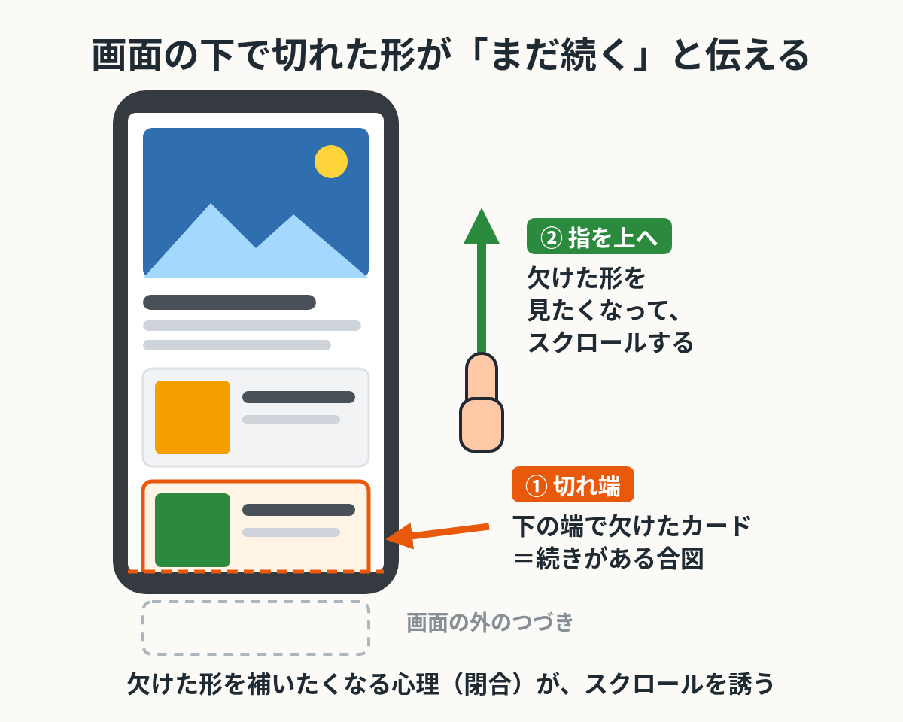
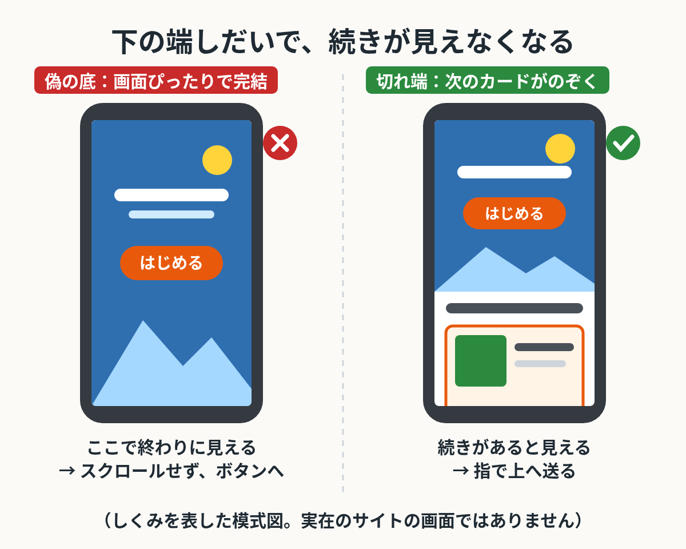

第11回 Web・アプリのUI
「ここで終わり」に見える偽の底（スクロールを誘う切れ端）


何がどう行為を誘っているか
スマホでページを開くと、画面の下の端で写真やカードが途中で切れていることがあります。この切れ端が「まだ下に続きがある」と伝え、指を上へ滑らせる行為を誘っています。
画面はスクロールできても、そのこと自体は目に見えません。押せるのに押せるように見えないボタンと同じで、手がかりがなければ隠れたアフォーダンスになります。そこで手がかり（シグニファイア）になるのが、画面の端で途切れた形です。Nielsen Norman Group（NN/g）のAlita Kendrickは、欠けた形を頭の中で補って全体として見る「閉合の原理（principle of closure）」を使うと、続きがあることを知らせ、スクロールやスワイプを促せると説明しています。横に流すカルーセルで、右端のカードを途中まで見せるのも同じしくみです。
惜しい例・悪い例との対比
逆に、見えている範囲だけで話が完結して見えると、続きがあっても人はスクロールしません。ブルース・トグナッツィーニ（Bruce Tognazzini）が1998年に名づけた「完結の錯覚（illusion of completeness）」で、見かけの終わりは「偽の底（false floor）」と呼ばれます。NN/gのKim Flaherty（2016年）は、画面いっぱいの動画と目立つ「Get Started」ボタンだけが見えるトップページを調べました。8人中6人が下へスクロールできることに気づかず、全員がそのボタンを押していました。画面幅いっぱいの横線、広すぎる余白、本文の途中の大きな広告も、ページの終わりに見えやすいと指摘しています。
切れ端の大きさも大切です。Kendrickは、切れたカードがごく小さく見落とされやすかったHelloFreshの例と、3つ目のボタンを約4割の大きさだけ見せて続きを伝えたTargetのアプリの例を比べています。
使いどころのひとこと
スライドや研究室のサイトで大きな画像を全面に置くときは、下の端に次の見出しや写真を少しのぞかせてください。NN/gの2018年のアイトラッキング調査（デスクトップ）では、ページを見ている時間の約57%が、スクロールせずに見える最初の範囲に集まっていました。授業では、同じページを「画面にぴったり収めた版」と「切れ端を残した版」で見せ、どちらでスクロールしたくなるかを聞くと、シグニファイアの働きを体験として話せます。
出典
- Flaherty, K. (2016). The Illusion of Completeness: What It Is and How to Avoid It. Nielsen Norman Group.
- Kendrick, A. (2021). Principle of Closure in Visual Design. Nielsen Norman Group.
- Fessenden, T. (2018). Scrolling and Attention. Nielsen Norman Group.
- Gaver, W. W. (1991). Technology affordances. Proceedings of the SIGCHI Conference on Human Factors in Computing Systems (CHI '91), 79–84.